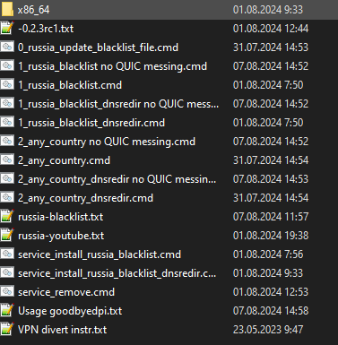
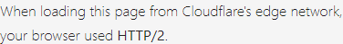
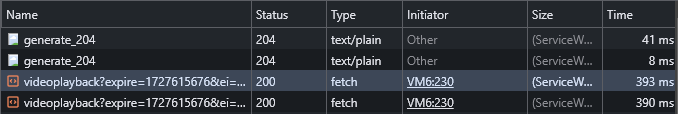
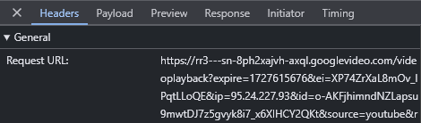

Добрый день. Сегодня перестал работать Youtube. С выключенным Kyber в браузере перед почти каждым видео есть задержка 6-10 секунд, во время которой черный экран и кружок загрузки. После этого видео начинает очень медленно грузится.
С включенным goodbyedpi-0.2.3rc1 (файл 1_russia_blacklist.cmd) скорость загрузки становится нормальной, но задержка 6-10 секунд перед видео осталась.
Смотрел в Wireshark, там после открытия видео проходят те самые 6-10 секунд, только после этого приходит ClientHello на домен googlevideo.com (без noDPI) и www.w3.org (с noDPI).
Если пропускать весь трафик через VPN, то такой задержки нет.
В чем может быть дело?
youtube_default.pcapng (1.2 MB)
youtube_no_dpi_mode9.pcapng (1.0 MB)
Сервер GGC Таттелекома, к которому совершается первое подключение, не отвечает вовремя. Либо goodbyedpi не удаётся обойти замедление при запросах к нему, либо он сам замедлен таким же способом, поэтому не отвечает вовремя.
Спустя какое-то время подключение устанавливается к серверам GGC Ростелекома, они уже быстро отдают видео.
Можете, разве что, в hosts заблокировать домен rr1---sn-u5uuxaxjvhg0-ocje.googlevideo.com
Сделал так, чтобы через VPN шли домены:
youtube.com
you.tube
yt.be
ytimg.com
А *.googlevideo.com идет напрямую. В russia-youtube.txt оставил только googlevideo.com. Тогда нормально все работает с goodbyeDPI.
Нет, это тоже не работает. В таком случае сам Youtube блокирует, видимо, из-за того, что IP разные идут на сам youtube и на googlevideo. Нужно целиком все домены через VPN посылать, но тогда в goodbyeDPI нет смысла.
В общем, такая проблема пока только на домашнем Таттелькоме. Добавление в hosts не помогает.
@ValdikSS, а как вы узнали, что не может подключиться к GGC таттелькома? rr1---sn-u5uuxaxjvhg0-ocje.googlevideo.com – это GGC таттелькома? Что-то не вижу его в дампе. Ищу по фильтру tls.handshake.type == 1
Такого не должно быть, GoodbyeDPI не меняет IP-адрес. Однако, неоднократно отмечались какие-то странные аномалии:
https://habr.com/ru/news/833016/comments/#comment_27113306
Да.
valdikss@fedora:~$ host rr1---sn-u5uuxaxjvhg0-ocje.googlevideo.com
rr1---sn-u5uuxaxjvhg0-ocje.googlevideo.com is an alias for rr1.sn-u5uuxaxjvhg0-ocje.googlevideo.com.
rr1.sn-u5uuxaxjvhg0-ocje.googlevideo.com has address 217.118.183.12
valdikss@fedora:~$ whois 217.118.183.12 | grep -E 'person:|mnt-by:'
mnt-by: TATTELECOM-MNT
mnt-by: GR10880-MNT
person: Service Provider PJSC Tattelecom
mnt-by: GR10880-MNT
mnt-by: TATTELECOM-MNT
mnt-by: GR10880-MNT
Wireshark показывает SNI фейкового пакета, а реальный отображается ретрансмиссией.
См. tcp.stream eq 7, например, в youtube_no_dpi_mode9.pcapng.
А, через VPN. Да, так не сработает. Поиграйтесь с опциями, в частности, попробуйте только --blacklist … -5 -e1 --reverse-frag.
Позапускал различные видео и нашел все четыре таттельскомовские GGC:
217.118.183.12 rr1---sn-u5uuxaxjvhg0-ocje.googlevideo.com
217.118.183.13 rr2---sn-u5uuxaxjvhg0-ocje.googlevideo.com
217.118.183.14 rr3---sn-u5uuxaxjvhg0-ocje.googlevideo.com
217.118.183.15 rr4---sn-u5uuxaxjvhg0-ocje.googlevideo.com
Они также имеют названия:
r1.tattelecomru-nbc1.googlevideo.com
r2.tattelecomru-nbc1.googlevideo.com
r3.tattelecomru-nbc1.googlevideo.com
r4.tattelecomru-nbc1.googlevideo.com
В большинстве случаев (9 из 10) видео оттуда не грузится и через 5-6 секунд ютуб переключается на другой сервер, в основном ростелькомовский (иногда другого оператора). Редко встречал, что и ростелькомовский сервер отказываются грузится.
Если прописать эти сервера в hosts файл Windows как
127.0.0.1 rr1---sn-u5uuxaxjvhg0-ocje.googlevideo.com
это не помогает.
Upd: помогает. Время уменьшилось с 5-6 секунд до 1-2 секунд. Причем эти домены больше не запрашиваются. Но через прокси быстрее получается.
Потом прописал в настройках клиента VPN, чтобы эти четыре сервера шли не напрямую, а через прокси. Тогда работает: ютуб почему-то не обращается к этим серверам и сразу предлагает ростелькомовские. Иногда снова появляется затык, когда ростелькомовский не хочет грузится, но это бывает редко.
Пока так.
@ValdikSS пробовал -5 -e1 --reverse-frag, но это не помогло.
После того, как заблокировал таттелькомовские GGC, все видео загружаются через ближайшие ко мне ростелькомовские GGC:
213.59.237.148 rr1---sn-gvnuxaxjvh-bvwz.googlevideo.com
213.59.237.149 rr2---sn-gvnuxaxjvh-bvwz.googlevideo.com
213.59.237.150 rr3---sn-gvnuxaxjvh-bvwz.googlevideo.com
213.59.237.151 rr4---sn-gvnuxaxjvh-bvwz.googlevideo.com
213.59.237.152 rr5---sn-gvnuxaxjvh-bvwz.googlevideo.com
213.59.237.153 rr6---sn-gvnuxaxjvh-bvwz.googlevideo.com
213.59.237.154 rr7---sn-gvnuxaxjvh-bvwz.googlevideo.com
213.59.237.155 rr8---sn-gvnuxaxjvh-bvwz.googlevideo.com
213.59.237.156 rr9---sn-gvnuxaxjvh-bvwz.googlevideo.com
213.59.237.157 rr10---sn-gvnuxaxjvh-bvwz.googlevideo.com
213.59.237.158 rr11---sn-gvnuxaxjvh-bvwz.googlevideo.com
213.59.237.159 rr12---sn-gvnuxaxjvh-bvwz.googlevideo.com
213.59.237.160 rr13---sn-gvnuxaxjvh-bvwz.googlevideo.com
213.59.237.161 rr14---sn-gvnuxaxjvh-bvwz.googlevideo.com
213.59.237.162 rr15---sn-gvnuxaxjvh-bvwz.googlevideo.com
213.59.237.163 rr16---sn-gvnuxaxjvh-bvwz.googlevideo.com
46.61.170.76 rr1---sn-gvnuxaxjvh-bvw6.googlevideo.com
46.61.170.77 rr2---sn-gvnuxaxjvh-bvw6.googlevideo.com
46.61.170.78 rr3---sn-gvnuxaxjvh-bvw6.googlevideo.com
46.61.170.79 rr4---sn-gvnuxaxjvh-bvw6.googlevideo.com
46.61.170.80 rr5---sn-gvnuxaxjvh-bvw6.googlevideo.com
46.61.170.81 rr6---sn-gvnuxaxjvh-bvw6.googlevideo.com
46.61.170.82 rr7---sn-gvnuxaxjvh-bvw6.googlevideo.com
46.61.170.83 rr8---sn-gvnuxaxjvh-bvw6.googlevideo.com
У меня до них пинг 10-20 мс.
С ними пока никаких проблем нет.
Ради интереса заблокировал их тоже. После этого видео начинает грузится с каких-то гугловских серверов с подсети 173.194.X.X, 74.125.X.X, до которых пинг 20-30.
У меня москва AS15169, не работает.
Амстердам, работает с byedpi.
Приветствую, у меня такая же проблема как и у вас, можете объяснить, что нужно сделать, чтобы сразу ютуб всё грузил? Просто прописать в хост “127.0.0.1 rr1---sn-u5uuxaxjvhg0-ocje.googlevideo.com” или что? Я в этом не особо разбираюсь
Я вот здесь примерно описал как можно делать:
Но это не гарантирует, что будет работать. Это зависит от того, какой GGC вам гугл предложит, после того как вы заблокируете самые ближайшие к вам. На некоторых есть “замедление” (если это действительно замедление), на некоторых нет.
Не понял, что за адрес с ошибкой и где его смотреть. Сейчас немного погодя все видео стали моментально грузиться
В Хроме Ctrl-Shift-I, вкладка Network, ввести фильтр googlevideo.com, потом нажать на видео. Если в начале не грузится, то появится красная строка. Нажать на нее, справа будет ссылка на домен googlevideo.com.
{kind=link}
Можно и через Wireshark все это посмотреть.
Теперь кажется понял как это делать, спасибо
Попробовал по вашему методу занести адреса проблемных серверов на Firefox, результат следующий:
- Нет ошибки о подключении к кэшу гугла. Первые несколько запросов на видео проходят без проблем, возвращая нормальный ответ. (возможно, огнелис помечает их ошибкой где-то в другом месте?)
- Последующие ответы приходят обрезанными,.
- Видео перестаёт грузиться, показывая ошибку “что-то пошло не так”
{kind=link}
Пробую дальше заносить в хост адреса с обрезанными ответами, их уже около 10, но пока никаких позитивных изменений
UPD: после внесения 20 адресов проблемных серверов - видео перестало грузиться вообще. Редиректа на другие сервера больше не происходит… С другими видео, запрашиваемыми не с этих серверов, проблем пока нет.
74.125.111.41 rr4---sn-5go7ynl6.googlevideo.com
В вашем примере это сервер гугла: Whois IP 74.125.111.41
Я блокировал/проксировал только GGC моего провайдера.
Добавил все адреса, которые были замечены от провайдера в hosts, перестали загружаться ролики(бесконечная загрузка).
Проверьте, не добавили ли вы, как и я, адреса самого гугла, пробив их через whois
По теме, пока получается, что с сервера гугла успевает загрузиться некоторый объём трафика, вне зависимости от того, на каком моменте начать просмотр.
Затем происходит замедление.
Я перед добавление все пропинговал, и проверил по ip что это мой провайдер.
Здравствуйте, не могли бы вы помочь мне с настройкой, я готов заплатить.
работоспособны ли символы маски фильтра (или как там это называется) * или ? для адресов
в russia-blacklist.txt? например, rr*---sn-n8v7?n*.googlevideo.com для
следующего списка
rr13---sn-n8v7znzl.googlevideo.com
rr13---sn-n8v7kne6.googlevideo.com
rr12---sn-n8v7kn7z.googlevideo.com
rr11---sn-n8v7kne6.googlevideo.com
rr10---sn-n8v7kne6.googlevideo.com
rr10---sn-n8v7knel.googlevideo.com
rr9---sn-n8v7knel.googlevideo.com
rr8---sn-n8v7kn7k.googlevideo.com
rr6---sn-n8v7kne6.googlevideo.com
rr6---sn-n8v7snl7.googlevideo.com
rr4---sn-n8v7knee.googlevideo.com
rr3---sn-n8v7kne7.googlevideo.com
rr1---sn-n8v7kn7k.googlevideo.com
rr1---sn-n8v7znly.googlevideo.com
Их не надо добавлять в russia-blacklist.txt или russia-youtube.txt. Их надо добавлять в hosts (В Windows это C:/Windows/system32/drivers/etc/hosts). Например:
127.0.0.1 rr13---sn-n8v7znzl.googlevideo.com
Там их надо каждую в отдельную строку добавлять.
Можно их еще блокировать/проксировать в VPN-клиенте, если у вас есть.
В russia-youtube.txt уже содержится googlevideo.com
@Rain я далеко не эксперт в этом, а обычный пользователь. Просто поделился с тем, что мне в какой-то степени помогло на моем провайдере. Каждый провайдер, возможно, блокирует/замедляет ютуб по-разному.
Ссылку на то как определить GGC провайдера я уже давал:
у меня вроде работает именно через russia-blacklist.txt, ибо тестил после перезапуска проги те же самые видосы, у которых изначально долгая загрузка с чёрного экрана. только вот добавлять эти адреса по одному долго, муторно, неудобно и неоптимально .) вот я и ищу способ автоматизировать ускорение ютуба
Если есть googlevideo.com в списке, то остальные добавлять нет смысла для работы goodbyeDPI. Смысл в том, что блокировать домены GGC, которые “замедлены”, чтобы ютуб сразу же предложил альтернативу.
нету в russia-blacklist.txt. мы с тобой про разные файлы говорим
У вас второй файл russia-youtube.txt не добавлен как чёрный список? Этот файл дополняет основной чёрный список, по функционалу они идентичны.
В батнике оно примерно так выглядит:
start “” goodbyedpi.exe -6 --blacklist …\russia-blacklist.txt --blacklist …\russia-youtube.txt --allow-no-sni --frag-by-sni
Как я понял, провайдер блочит любые запросы не от себя. Когда добавляю в hosts своего, то перестают грузиться ролики, прога (blacklist_dnsredir.cmd и russia_blacklist.cmd) не помогает (перепробовал все пресеты на обоих и различные флаги), только vpnы срабатывают.
У меня проблема, как в этом посте “Не грузится только некоторые видео на youtube” - но отфутболили сюда
Добавил в файл hosts все красные ссылки, что светились из консоли. Так 10 минут где-то делал, но в итоге видео, которое не загружалось(а другие загружались) не смогло воспроизвестись.(F5 нажимал)
Скачивал GoodbyeDPI 0.2.3rc1 - Launcher 8.0, копался на форуме по этой программе, пробовал разные настройки(2 country, dnsredir всякие, даже флажки добавлял после -9 из под разных постов, испробовал каждый “быстрый шаблон настроек”, service включал на фоне) , обновлял блеклист, добавлял/убирал из хостс ссылки - ничего не помогло. Провайдер ростелеком. Перезагружал пк, менял браузер, менял DNS сервера, включал/выключал флажки quic и kyber[пробовал по разному и вкл/выкл вкл/вкл выкл/выкл /выкл/вкл (я уже наверное попробовал всё, что можно было!) windows 11, на других устройствах похожая ситуация, где-то видео грузятся спокойно, а какие-то не загружаются. Могу ещё отметить, что до августа я пользовался программой 4k video downloader, которая скачивала видео с ютуба напрямую. Но после “урезаний” ютуба, 4kvideodownloader не загружает видео с ютуба. Мало того, другие программы тоже ничего делать не могут. Конечно можно скачивать онлайн через сайты, но там скорость не такая уж и большая, неудобный интерфейс и нельзя загружать плейлистами.
Словно чёрная дыра и ничего не помогает
Попробуйте это видео воспроизвести. У меня с ним стабильно грузится 1 минута, после чего пакеты возвращаются по 6 байтов. Провайдер Ростелеком, Липецк.
Может кто подсказать, какой сайт указывать в дампе трафика для wireshark? Сам youtube.com?
upd: Если перезагружать страницу раз в минуту, продолжая просмотр с последней точки останова, можно посмотреть всё проблемное видео целиком.
А есть ли вариант прям для чайников всё расписать что да как тыкать? Я просто вообще не разбираюсь в этой теме, и что такое пингануть, GGC, и надо ли это всё делать с открытым GoodByeDPI я не знаю. Вот как делал я (но это мне не помогло от слова совсем): Открыл файл “1_russia_blacklist.cmd” в GoodByeDPI, открыл браузер, а в нём ютуб, нажал Ctrl+Shift+I, открыл видео, выбрал строку с ошибкой скопировал адрес rr10---sn-n8v7kn7d.googlevideo.com, прописал в CMD
мне вылез IP 173.194.176.220 и время приёма-передачи (2-4мс), далее я поступил также от rr1 до rr18, так как rr19 уже не находит, прописал их все в ряд в файл hosts, но проблема чёрного экрана продолжилась и ошибки продолжили сыпатся тоннами, так же я поступил со всеми ошибками, и прописал около 100 строчек, но проблема не то что не исчезла, как мне кажется она даже усугубилась
Пинг проводится, чтобы местного провайдера исключить из загрузки, т.к. у него замедление на серверах стоит. Youtube даст альтернативные сервера, что увеличит скорость загрузки видео.
У Вас пинг до всех серверов с ошибками был в пределах 5ms?
Сейчас удалил всю свою писанину из hosts’а, открыл GoodByeDPI, полазил по ютубу и действительно у большинства был пинг до 5мс, но среди них был один rr1---sn-ab5l6nrd.googlevideo.com с откликом 119мс
Доброго времени. Не понимаю, в чем, собственно, здесь проблема. Не уверен, что зависит от провайдера, но могу ошибаться. Я использую версию 0.2.2! Мало того, что задержек никаких нет, при любом качестве, отдельное огромное спасибо разработчику, так при загрузке страницы звук и видео начинают загружаться быстрее самой страницы Ютуб. Это не шутка! С этой программой открываются, абсолютно все сайты, которые добавите в список, ну, кроме тех, которые блочат извне страны. P.S. Помимо Kyber, нужно отключить Quic.
Это баг браузера файрфокс bug 1900191, bug 1878510
Было ещё до блокировки, но тут автор писал, что в разных браузерах происходит:
У меня лечится перезапуском браузера, в Chromium-based браузерах такой проблемы не ловил.
Перезапуск не помогает, но за наводку - спасибо огромное! Я был уверен, что это Ркн так отдельные сервера блокирует)
- У меня наоборот гугловские кэширующийся сервера не работают(403, либо time out), но сервера местного провайдера(megafon) отдают видео нормально с включенным обходом. Что можно сделать?
- Ещё заметил что гугловские сервера почему то получают в параметре запроса с ip - не мой ip и возвращают 403, а сервера провайдера получают корректный ip. С чем это может быть связано и ошибка ли это?
Проблему решил. Виновник - DNS-over-HTTPS. Его отключение помогает просмотреть видео без проблем, конкретно в Firefox.
Как временная мера, при включённом DoH, можно открыть видео во встроенном окне и тогда оно воспроизведётся без проблем.
С каким пресетом запускаете обход? Dns redir пробовали? NextDNS включён в браузере в качестве DoH?
Да, есть такое
Иногда в запросах videoplayback появляются рандомные IP со всего света, и по ним ответ 403
Выше есть ссылка на habr:
Бывает так, что не проходит ни один запрос, тогда видео не работает совсем
Проходит само, возможно устаревает кеш, или еще что-то там
У меня тоже самое, без авторизации на ютубе трансляции работают нормально, с авторизацией от 30 сек до минуты и пишет Что то пошло не так…С обычными видосами проблем нет. Всегда запущен goodbaydpi -9. Пробовал разные параметры - результат всегда одинаковый.
Перепробовал все что посоветовали, через hosts удалил провайдера, через впн прогнал домены, не помогает, не знаю что даже уже делать
Вроде на Таттелеком отпустила. YouTube чётко работает
За тупы пропали. Подвисание.Только скорость режут
- -5 --dns-addr 77.88.8.8 --dns-port 1253 --dnsv6-addr 2a02:6b8::feed:0ff --dnsv6-port 1253 --blacklist
- NextDns был включен, выключил - все также
Если что я просто переключил новый билд программы на 8 профиль, без блокировки QUIC и видео перестали тормозить вовсе, скорость как без замедла. Видео грузятся так же мгновенно без 6 секундного ожидания. Может кому поможет. В итоге создал по каждому файлу копию с 8 профилем просто, получилось как то так. 9 не удалял потому что а фиг его знает что там надумают.
Но за утилиту огромное спасибо @ValdikSS ты просто супер

Перепробовал все сборки и все способы, на мгтс/мтс ничего не помогает. Однако если что-то параллельно скачивать одновременно с просмотром ютьюба, можно худо-бедно смотреть но это не вариант.
попробуй почитать это для МГТС там есть параметры, попробуй их.
Я же написал. Попробовал все вариации сборок, цифр и методов. Не только гудбай дипиай
Вроде на Таттелеком отпустила. YouTube чётко работает
Да, сегодня с утра стало нормально. GGC Таттелькома стали мгновенно видео отдавать. Скорость режут до 30 Мбит.
На таттелькоме начали блокировать как-то по-другому. GDPI не справляется ни в каком режиме. Бесконечная загрузка в начале видео, очень редко после длительного времени все-таки начинает воспроизводить. Пытается грузить видео с локальных GGC, с региональных и гугловских.
{kind=link}
С региональных поток выглядит так:
{kind=link}
С гугловских дело даже до Server Hello не доходит:
{kind=link}
Проблема возобновилась, у меня теперь никакие видео не грузят
Подтверждаю, ничего не грузит от слова совсем.
Что делать-то? Так и будем на VPN сидеть что ли?
В перспективе все равно нужно готовится к VPN. Видно, что РФ движется по траектории Китая в плане ограничений. Способы обмана DPI, подобные тем, что применяет GDPI, там уже давно не работают - только изощренные VPN.
В перспективе нужно готовится к замедлению до скорости dial-up на зарубежные сети. Запасайтесь накопителями.
Туннели до впсок зарубежных тоже не спасут? Как с этим в Китае?
Бесконечная загрузка ютуба сегодня
Если оторбажается ТОЛЬКО плеер, а не интерфейс ютуба, то удаляйте youtube.com из всех текстовых документов списка доменов
зависит от реальных $$$
ибо возможны варианты
- режут вообще всё “не РФ” IPv4/IPv6 == пофиг на SNI. AS. etc
- будут как сейчас банить/резать протоколы / SNI / конкретные “сети” (CDNы, хостинги)
вот во втором случае есть шанс найти какие то не особо извествные/популярные хостинги
p.s. опять же зависит от настроек и криворукости. мой ВПН смотрю подменяет SNI до своих серверов вне РФ на vk.com/mail.ru/etc. уж не знаю помогает или они пока как неуловимый джо.
вон TOR relays например почти все по IPv4 банят
Я вот что выяснил. Похоже что проблема в текстовике с ютубовскими адресами. Возможно, что чего-то в нем не хватает.
Как только я в ВПН, обычный ВПН, вставляю наш список разрешенных сайтов, он точно так же ничего не грузит. Как только отключаю вообще весь белый список, то грузит отлично.
Вот что у меня в списке:
youtube.com
googlevideo.com
youtu.be
ytimg.com
Дополнительно нашел такие адреса, у людей с ними работало, но сейчас уже перестало
www.youtube.com
i.ytimg.com
yt3.ggpht.com
nhacmp3youtube.com
Вот тут вроде есть актуальный список.
YouTube Blocked hosts in Russia.md · GitHub
на таттелекоме домашнем с гудбайдпай ограничение скорости обходится прекрасно а вот затыками некоторых видео не знаю как лечит даже стримы не все сразу заводятся пока не обновишь страницу
В Китае работают обычные публичные ВПН, в том числе бесплатные.
Так как вы решили в итоге свою проблему? Как именно?
И еще: есть ли разница - блокировать ли проблемные домены через hosts или проксировать через отдельный vpn?
Так как вы решили в итоге свою проблему?
Никак, у меня сейчас это не работает. Теперь пропускаю весь ютуб трафик через прокси.
И еще: есть ли разница - блокировать ли проблемные домены через hosts или проксировать через отдельный vpn?
Когда это у меня работало, через прокси было быстрее. Через hosts была задержка 1-2 секунды перед началом видео, не знаю с чем связанная.
Блок через hosts не сбрасывает соединение сразу, а идёт попытка; через NX DOMAIN запись это происходит мгновенно.
А у вас есть список. Какие надо добавить. Я добавляю . Что это не работает
Список индивидуален для разных провайдеров и городов.
А сколько их там. Где мне их брат
У меня порядка 300 штук в кэше, брать самостоятельно из консоли разработчика в браузере. Будут домены из вашего города и москвы. Чтобы не сойти с ума написал фильтр сетей.
А почему они не доступны. Они Что так быстро сломались
То есть? Просто запускаете программу как обычно?
Попробовал внести в hosts проблемные домены, в целом результата не дало, да. Разве что задержка теперь 3-4 секунды и она всегда(хотя раньше были видео, включающиеся мгновенно), но зато нет загрузки по восемь секунд, что была раньше.
Почему-то несмотря на блокировку докуменов через hosts ютуб в любом случае выдает ошибку с внесенными в hosts файлами. Это нормально?
Получается. YouTube. Не поможет. . Программы. Типа. Goodbye… Придётся через VPN сидеть
Вчера работал ютуб с параметрами gdpi -9 либо -5
Сегодня завелся только с такими -f 2 -e 2 --wrong-seq --auto-ttl 2 --frag-by-sni
Без блэклиста.
upd Хотя вот с таким списком адресов вроде тоже грузится.
Спойлер
youtube.com
googlevideo.com
youtu.be
googleusercontent.com
googleapis.com
redirector.googlevideo.com
gvt1.com
video.google.com
video.l.google.com
m.youtube.com
www.youtube.com
youtubeeducation.com
youtubeembeddedplayer.googleapis.com
youtube.googleapis.com
youtubei.googleapis.com
youtubekids.com
youtube-nocookie.com
youtube-ui.l.google.com
yt3.ggpht.com
yt.be
ytimg.com
ytimg.l.google.com
ytkids.app.goo.gl
yt-video-upload.l.google.com
l.google.com
i.google.com
s.ytimg.com
withyoutube.com
wide-youtube.l.google.com
ggpht.com
youtubefanfest.com
youtubegaming.com
youtubego.com
youtubemobilesupport.com
ps. оператор мегафон, проводной
То есть, у моего оператора GoodbyeDPI больше не помогает. Я вместо него VPN использую.
Мне удалось еще завести zapret и buydpi. Все 3 способа пока что работают. Ключевое “пока что”)
Печально. А какой впн, если не секрет?
VLESS+Reality на VPS. Про то какой VPS выбирать можете почитать здесь:
Меня сия проблема тоже коснулась, опишу тут свой опыт и выводы. Провайдер скайнет, СПб.
В общем, при просмотре видосов, если смотреть через монитор сети, то видно что почти всё тянется с 2-х видов адресов, скайнетовских ---sn-n3toxu-axql и каких-то ещё из СПб ---sn-axq7sn7l. Другие адреса проскакивают, но очень редко.
Если видос популярный, он тянется со скайнетовских GGC ---sn-n3toxu-axql, без задержек при перемотке и т.п. В процессе выяснилось, что эти серваки вообще до ТСПУ расположены.
Однако, если видос непопулярный, то скайнетовские GGC начинают таймаутиться, постоянно валятся NS_BINDING_ABORTED и т.д. Что довольно странно. Именно таймауты в итоге и приводят к жутким паузам при перемотке. А реальный трафик вообще идет с серверов ---sn-axq7sn7l, расположенных за ТСПУ.
Поначалу думал, что может фейки вызывают ошибки, т.к. доходят до сервера. Но на практике даже без gdpi/zapret ситуация не меняется и никакие варианты настроек ничего не дают.
Наигравшись в браузере, я пошел проверять как дела обстоят в yt-dlp. Если запустить с флагом --get-url, то видно, что yt-dlp обращается к youtube.com, а тот возвращает скайнетовские ---sn-n3toxu-axql. При попытке скачать популярное видео проблем нет. При попытке скачать непопулярное видео наблюдается интересная ситуация: пара мегабайт скачивается, потом 5 секунд пауза, пара мегабайт скачивается, снова пауза, и так по кругу. Если прервать закачку на 50%, удалить то, что успелось закачаться и начать снова - то эти 50% закачаются за секунды с максимальной скоростью. Т.е. они закэшировались на сервере и отдаются оттуда без проблем. А начиная с 50% закачка опять начнет ползти как черепаха.
Исходя из всего этого можно сделать вывод, что проблем на канале между клиентом и GGC скайнета нет - если видео уже лежит там в кэше, то оно отдается мгновенно. Реальная проблема между GGC провайдера и внешней сетью. То ли там искуственно скорость режут, то ли тупо канал не выдерживает нагрузку, т.к. из-за ТСПУ, отрезающего доступ к внешним GGC, все запросы идут на внутрипровайдерные сервера в основном, то ли ещё что. Ну и как следствие, манипуляции с пакетами тут без толку.
Ещё интересный момент. Недавно, с 30 августа по примерно 3 сентября, на скайнете ютуб вообще почти не работал - ни gdpi, ни zapret практически не помогали. Связано это было как раз с тем, что сервера ---sn-axq7sn7l не работали вообще. То есть ситуация: сервера до ТСПУ лагают безбожно, а ближайшие за ТСПУ не пашут. В итоге ютуб тупо встал.
Какие тут есть решения? Ну, в браузере всё просто: заблочить провайдерские GGC в том же uBlock:
Спойлер
www.youtube.com rr1---sn-n3toxu-axql.googlevideo.com * block
www.youtube.com rr2---sn-n3toxu-axql.googlevideo.com * block
www.youtube.com rr3---sn-n3toxu-axql.googlevideo.com * block
www.youtube.com rr4---sn-n3toxu-axql.googlevideo.com * block
www.youtube.com rr5---sn-n3toxu-axql.googlevideo.com * block
www.youtube.com rr6---sn-n3toxu-axql.googlevideo.com * block
www.youtube.com rr7---sn-n3toxu-axql.googlevideo.com * block
www.youtube.com rr8---sn-n3toxu-axql.googlevideo.com * block
В результате задержки полностью пропадают, т.к. видосы тянутся с внешних GGC, которые сейчас работают норм и достать до них можно без проблем через gdpi/zapret. Правда, неизвестно, когда они вновь отключатся - раз уже был прецедент.
А вот с yt-dlp ситуация сложнее. Если заблочить эти адреса в hosts, то yt-dlp тупо вываливается с ошибкой. Там вроде как есть флаги типа --xff и --geo-verification-proxy, но они не работают (из-за обнов ютуба?), что легко проверить через --get-url. Хоть ты тресни, но присылает ссылку на скайнетовский GGC. Единственный вариант - полностью пустить трафик через прокси флагом --proxy.
Однако, есть ещё один любопытный момент. При использовании yt-dlp в связке с медиаплеерами, типа mpv или mpc-hc, yt-dlp используется только для получения url-адресов. А сами данные качаются через ffmpeg/lav которые прокси не используют. То есть вы можете пустить yt-dlp через какой-нибудь бесплатный, медленный или даже небезопасный прокси (т.к. вы, фактически, никаких данных кроме url-адреса видоса не отправляете), а сам поток будет тянуться плеером напрямую, через gdpi/zapret, не используя прокси.
А ещё в качестве прокси можно использовать Тор Браузер (socks5h://127.0.0.1:9150). Сам он довольно медленный, но так как мы через него только url-адрес получаем, то пофиг. + Можно самому нужную страну для GGC настроить, вписав в torrc что-нибудь типа ExitNodes {RU} StrictNodes 1.
В чем смысл всей этой дичи? Я хз 
PS: кому интересно, для googlevideo.com на скайнете сейчас работает вариант -e 1 --reverse-frag для gdpi и --dpi-desync=disorder2 для zapret. Даже фейки не нужны. Причем достаёт даже до ростелекомовских GGC. У меня даже появилась теория, что они ослабили блокировки ютуба и гуглвидео, потому что ТСПУ не справляются с фильтрацией фейков.
Какие тут есть решения? Ну, в браузере всё просто: заблочить провайдерские GGC в том же uBlock:
Я попробовал это, но у меня совсем перестали работать все видео. Обычно, если это не популярное видео, то мне нужно перезагрузить страницу несколько раз, чтобы загрузка началась, и сама загрузка медленная, т.е. когда доходит до конца то будет пауза на некоторое время, но перемотка на незагрженные фрагменты идет с большой задержкой. Я менял DNS на cloudflare, google, opendns, использовал /flushdns и перезапуск браузера естественно, но вся та же фигня.
Ну, у разных провайдеров ситуация разная и то, что помогло мне - может не помочь вам.
Короче, я сейчас распишу всю свою последовательность действий, возможно кому пригодится.
- Ставим в браузере режим строгого https, настраиваем doh, отключаем kyber и quic. Делаем ipconfig /flushdns На этом этапе в etc/hosts и в блокировщике рекламы у вас не должны быть заблочены никакие гуглвидео-серваки. Также убедитесь, что выключены всякие браузерные ВПН/ускорители/цензортрекеры.
- Открываем (с gdpi и без) популярное русскоязычное видео, нажимаем F12, раздел сеть/network, смотрим запросы xhr/fetch адресованные к
googlevideo.com/videoplayback, выписываем адреса себе в блокнот. Повторяем с несколькими видео. - Проделываем (с gdpi и без) тоже самое, но с непопулярным англоязычным видео до 5к просмотров.
- Теперь отключаем gdpi, открываем командную строку и проверяем доступность серверов из списка командой наподобие такой:
curl -sv -o NUL https://rr1---sn-n3toxu-axql.googlevideo.com
Обратите внимание, подключение должно быть по https. Если у вас пишет что-то в духе schannel: disabled, то вам надо обновить curl. Я с такой проблемой столкнулся на ltsc винде с отключенными обновлениями. Ещё есть опасность, что будет редирект, так что смотрите чтобы сертификат был от googlevideo. - На предыдущем шаге выписываем, какие сервера доступны без обхода (они скорее всего принадлежат вашей сети или типа того) и какие сервера таймаутятся на этапе server hello.
- Запускаем gdpi и проверяем все сервера снова. Важно, чтобы те сервера, что были доступны без обхода не начали возвращать ошибки типа SSL что-то-там. А те, что таймаутились теперь должны отвечать. Настраиваете стратегию gdpi при необходимости, пока не найдем рабочую. На моем провайдере было достаточно
goodbyedpi.exe -e 1 --reverse-frag - Теперь проверяем эти сервера на https://www.nslookup.io/ С теми серверами, которые не находятся в вашем городе, больше делать ничего не надо.
- Теперь, с включенным gdpi, находим малопопулярное видео и вбиваем его в yt-dlp с флагом --get-url. Вам должно подсунуть ближайшие GGC. Запоминаем какие. Попробуйте несколько видосов.
- Теперь, пробуем скачать видео через yt-dlp. Важно брать новые видео, которое вы не смотрели до этого, т.к. просмотренные могли закэшироваться на провайдерских GGC. Оцениваем скорость. Если видите, что происходит нечто аномальное, типа того, о чем я писал в прошлом посте, то возможно вам мой метод поможет. В противном случае - хз.
- Допустим, после предыдущих тестов, у вас есть 2 группы серверов из вашего города. Одна принадлежит вашему провайдеру, вторая кому-то ещё (соседнему провайдеру, например). Пробуем сначала заблочить свои внутрипровайдерские GGC.
- Определяем диапозон адресов для блокировки командой ping, по аналогии:
ping rr1---sn-n3toxu-axql.googlevideo.com
ping rr2---sn-n3toxu-axql.googlevideo.com
ping rr3---sn-n3toxu-axql.googlevideo.com
и т.д. пока не начнёт возвращать ошибки. - Теперь пробуем их заблочить. Я рекомендую через uBlock/uMatrix, т.к. etc/hosts вроде игнорится при включенном doh.
- На примере uBlock. Идем в настройки, раздел “мои фильтры” и блочим вот таким образом:
||rr1---sn-n3toxu-axql.googlevideo.com
||rr2---sn-n3toxu-axql.googlevideo.com
Нажимаем применить изменения. - Обновляем ютуб через ctrl+F5 и тестим (с включенным gdpi, естественно).
- Если нет результата или ситуация только ухудшилась - разблокируем заблоченные адреса и возвращаемся к пункту 11. Повторяем шаги для другой группы адресов из вашего города - возможно к проблемам приводит она. Т.е. например, задержки могут вызывать не GGC вашего провайдера, а GGC провайдера по соседству.
А куда пропала тема про скайнет? Там нашли способ убрать эти задержки в 3-5 секунд именно на этом провайдере?
Я как понимаю был откат сайта по какой-то причине, потому что мой аккаунт тоже удалился, который я создавал за день до него
Нашли, но не там. И не тот.
Тут посмотрите, выше и ниже.
74.125.110.218 пинг 13 - отказ
74.125.110.167 пинг 30 - грузит
173.194.181.162 пинг 13 - отказ
173.194.187.200 пинг 54 - грузит
И точно так-же, для остальных.
Если пингуется хорошо - встаёт штыком и отказывается работать.
Через tracert.
Всё, что пропадает, идёт в
svo*s*-in-f*.1e100.net
А удачные в
arn*s*-in-f*.1e100.net
bud*s*-in-f*.1e100.net
fra*s*-in-f*.1e100.net
В проге на android данный баг фиксится настройками в самом приложении без всяких блокировок ip ggc.
Использую ByeDPI. Он создаёт VPN сервер прямо в телефоне и сразу же подключается к нему, видимо, чтобы получить доступ к пакетам, иначе в Android нельзя.
Была такая же проблема. Некоторые видео начинали воспроизводиться после паузы, а некоторые не воспроизводились совсем, как в приложении youtube, так и на сайте.
Нашёл статью на Хабре с правильными настройками. Вот её адрес, но нужно заходить через VPN, потому что Хабр выпилил её по требованию РКН Хабр (habr.com)
Поменял настройки, Youtube заработал отлично. Проверял в приложении, на сайте через мобилу, раздал на комп через Wi-Fi, проверил у трёх разных провайдеров. Всё работает идеально, никакой задержки, все видео воспроизводятся и на телефоне, и на компе.
Есть нюанс. Чтобы работал Instagram, нужно возвращать настройки на дефолтные.
ValdikSS писал, что программа бессильна, потому что РКН банит какие-то ip, а не фильтрует пакеты. Похоже, что это не так. Похоже, что можно как-то подшаманить обход DPI, чтобы Youtube работал нормально.
Можно подшаманить, например используя DoH, а не DNS провайдера. Power Tunnel Android такую возможность имеет, не знаю имеет ли ByeDPI
Это всё равно разрушает теорию о том, что РКН банит ip ggc
Я нигде и не сказал, что ТСПУ банят какие-то GGC по IP - потому что этого нет. Я про остальные нельзясайты говорил.
У меня при помощи GoodbyeDPI при любых настройках бесконечная загрузка видео. Причем через curl видно, что GoodbyeDPI работает: скорость неограниченная, но на деле видео грузить не хочет.
Иногда помогает перезагрузить роутер, чтобы IP сменился. Меняется маршрут подключения к googlevideo.com и ютуб использует другие GGC-сервера, которые работают. Через несколько дней провайдер меняет IP, и если снова попадется “плохой”, снова приходится искать “правильный”, перезагружая роутер. Проще через прокси ютуб пропустить, что я и делаю.
На моём провайдере с GoodbyeDPI помогает несколько раз обновить страницу с видео. После 2-7 обновлений видео запускается.
У меня это не помогает, если IP плохой.
[quote=“blanche.hermine, post:96, topic:8395”]Проще через прокси ютуб пропустить, что я и делаю.
[/quote]
Ага, а потом ютуб тебе пишет - Зарегистрирован подозрительный трафик, исходящий из вашей сети. Докажи, что ты не бот )
Увы, но даже так не работает.
Даже через ByeDPI есть шанс, что отправит на московские AS15169. И опять начинается рулетка, сидишь, перезагружаешь страницу пока не выпадет европа для подключения.
Вот донести бы до Гугла, чтобы он эти серверы мне никогда не предлагал и жизнь пойдёт.
Где я только не пытался блокировать сервера, и в хосте, и в хроме, и расширениями.
Сейчас проверил схему. Костыль, конечно, но работает. Если очень хочется посмотреть Youtube, то поможет.
Ставим на Android ByeDPI, применяем настройки из этой статьи Хабр (habr.com), подключаем мобилу к роутеру по Wi-Fi, раздаём на комп по USB.
Всё работает.
По всей видимости в ByeDPI есть какой-то то ли баг, то ли особенность. В какой-то момент он начинает работать как бы “на половину” или вообще отваливается, хотя соединение VPN при этом установлено. Нужно зайти в приложение, нажать Disconnect, дождаться, когда отвалится VPN соединение, потом опять нажать Connect.
Иногда нужно сделать так пару раз или даже перезапустить приложение, а в редких случаях сбросить настройки на дефолтные, потом опять поставить “правильные”.
Может быть, из-за этого не получилось. Потому что по этой моей схеме у всех моих знакомых в разных регионах всё работает отлично.
Моск область если кто искал, провайдер RNC - (Региональные Сети)
Заблочить надо эти хосты:
https://rr2---sn-4pvgq-n8vs.googlevideo.com
https://rr5---sn-4pvgq-n8vs.googlevideo.com
https://rr4---sn-4pvgq-n8v6.googlevideo.com
https://rr1---sn-4pvgq-n8v6.googlevideo.com
https://rr9---sn-4pvgq-n8v6.googlevideo.com
https://rr10---sn-n8v7znze.googlevideo.com
Без этого действия задержка 6-10 секунд, сейчас норм, в Network(Хром) оранжевым вылетает rr3, но без задержек запускает. А вот перечисленные красным с задержкой
А можно ли это Заблокировать на уровне роутера
rr2---sn-u5uuxaxjvhg0-ocje.googlevideo.com
rr4---sn-u5uuxaxjvhg0-ocje.googlevideo.com
rr4---sn-u5uuxaxjvhg0-ocje.googlevideo.com
rr2---sn-u5uuxaxjvhg0-ocje.googlevideo.com
rr1---sn-u5uuxaxjvhg0-ocje.googlevideo.com
rr3---sn-u5uuxaxjvhg0-ocje.googlevideo.com
В роутерах, как правило, есть возможность блокировки по айпи. Найдите айпи и заблочьте там.
Хотя, я бы вам посоветовал блочить через адблок/юблок. В таком случае у вас даже запрос отправляться не будет. А в варианте с роутером придется ждать ответ с ошибкой. Впрочем, это разница в миллисекунду.
Проверил у себя. Пооткрывал пару роликов. Ошибок как бы и нет, но пинг, как то не алло.
{kind=link}
{kind=link}
Ошибок вроде нет
А где именно это все с * block прописывать в uBlock? Мои правила?
Добрый день! Задержка перед началом воспроизведения видео на YouTube может быть связана с несколькими факторами. Проблемы с маршрутизацией, кэширование и блокировки, DPI и заголовки пакетов.
Если VPN работает без задержек, это, скорее всего, значит, что он обеспечивает надежное шифрование и обход всех ограничений. В общем, видимо, дело в маршрутизации и обработке пакетов вашим провайдером.
В “моих фильтрах” можно прописать вот так:
! === YouTube ===
! = Блокируем тормозящие сервера в штучном порядке (адреса тормозящих конкретно у вас серверов ищите сами!) =
||rr*---blablabla.googlevideo.com^
! = Превентивно блокируем ошибки 403 =
||googlevideo.com/videoplayback^$method=get
Спасибо большое.
upd. Вроде сделал, как ты сказал, а на выходе:
{kind=link}
я хз ваще в чём смысл блокировать их если ркн делает ето за нас  надобовлял я целу кучу етих адресов в хостс филе результат такой же прост вместо NS_BINDING_ABORTED буит у вас NS_UNKNOWN_HOST или как то так тока и делов
надобовлял я целу кучу етих адресов в хостс филе результат такой же прост вместо NS_BINDING_ABORTED буит у вас NS_UNKNOWN_HOST или как то так тока и делов
РНК блокирует ggc, не сам хухел. Хухел их видит и пытается подключиться. Для того чтобы он их не видел, их нужно блокировать клиентом. Тогда хухел будет пытаться подключиться к другим сервакам и скорее всего успешно.
Если NS_UNKNOWN_HOST то надо почистить кеш и куки браузера.
хм индиресно… ну хз у меня также идёт биндинг абор в том числе и на i.ytimg но превьюшки тем не менее кажут, там ето видно как оно идёт загрузка видева как тока оно попадает на ggc который аборт оно тутже идёт на другой с которова грузит норм т.е. поидее должно стать быстрее кокда их заблокируеш у себя но ето же не мы на клиенте решаем к какому понтключатся а гугол сам понтсовывает их хз по какому алкоритму
Причем этот “алкоритм” (точно в гугеле набухались и это придумали) работает в разных браузерах по-разному. Например в Хроме (как-бы что ни на есть продукт гугла) GGC почти не хотят с моим браузером общаться по QUIC, Файрфокс это делает с переменным успехом, Эдж почти всегода по QUIC видео забирает. Как это работает и от чего зависит (кроме марки браузера), я так и не понял 
Скорее всего это связано с настройками UserAgent. Бровзеры также по разному реагируют на сервер авторизации плау.хухел.ком, хром валит ошибки (но при этом работает), лисе пофиг, эджу тоже. Алсо, у меня эдж ходит по h1 на видево, квик, видимо, в сети порублен.
Бро, у меня буквально чёрным по белому написано: “адреса тормозящих конкретно у вас серверов ищите сами”. Так скажи пожалуйста, чего ради ты заблочил сервера моего провайдера? Или может у тебя тоже провайдер “скайнет спб”?
Спойлер
{kind=link}
В openwrt имеется околонастройка встроенного DNS в разделе “hostnames” (по крайней мере на моей древней версии)
{kind=link}
{kind=link}
Ради интереса, а что показывают вот эти две страницы во всех браузерах?
Мозилла с Хромом отвалились полностью, Эдж - полностью зелененький
Вторая ссылка - это не тест, там ничего не показывает )
По второй ссылке упрощенный тест в первом абзаце

А, блин ) Во всех 3-х HTTP/3. Но это после перезапуска Лисы и Хрома. Почему в них квик со временем отваливается напрочь - моя не понимать
У меня сегодня началась обратная хрень.
Значица мой местный РКН решил блочить сам сайт вместо хухелвидева. Ситуация обратная, теперь картинки грузятся по несколько минут, зато видосы моментально. 
Да я уже начинаю понимать, что если хоть что-то из системы ютуба забанить, то все начинает работать через опу, даже с обходом. Но слава богу, если сильно не присматриваться, это не сильно заметно
Странно что картинки не грузятся, они же не на сайте UI висят
ytimg начал слишком долго отвечать, хотя стратегия подобрана верно. Без обхода разумеется не работает, так как в бане уже много лет.
у меня такое при ttl=1, видео работает, а картинки и комментарии грузятся медленно
при ttl =2 и то и другое работает быстро.
но у тебя возможно другой случай.
У меня такое было, когда домен был указан с поддоменом, заменил просто на ytimg.com в блэклисте и все залетало. А разве превьюшки были забанены? Это ж аватарки были, а они на ggpht.com
А не, они и там и там (превьюшки)
У меня сайт с картинками висит на той же стратегии что и хухелвидево, без ttl, в принципе в моей сети этот параметр бесполезен.
Скорее всего нужна тонкая настройка, но времени заниматься этим нет. Главное чтобы видосики крутило без проблем, остальное не особо важно.
На превью один кликбейт. Так что пусть их не будет 
У меня РКН начал блокировать сам сайт трубы. Без обхода он не открывается. Соответственно, сопутствующие домены тоже.
Сейчас вот потыкал, ytimg возвращает connection reset. С дурилкой загружает, но очень медленно, и без ошибок.
ЗЫ. А стримы вообще уехали в бесконечную загрузку без ошибок. Хотя, если запускаются, то сразу отваливаются. При этом никакими другими способами стрим не запустить, внешние плееры просто вываливают ошибки.
У меня счас тоже отвалились. Пришлось разделить стратегии на гуглвидео и все остальное с ютуба, с разными ттл и с добавлением к сплиту2 фейка гугла
Вот-вот.
Попробовал и так и через HOSTS - таймаут
Пробовал вставлять IPшники казахских кэшей и американских - оба в таймаут уходят
Еще инфа по теме на сегодня.
Задержку перед запуском видео при правильных настройках так же может вызывать quic, а точнее, kyber.
Статус 204 пытается прогрузиться через h3, он нужен для инициализации соединения по quic, но может отлетать с ошибкой сертификата ssl. Это и вызывает задержку.
Что за статус такой? Или речь про generate_204? Если да, то у меня его вообще юблок гасит, но все работает и по квику и по HTTP/1.1 без задержек. Кстати, сегодня все улучшилось в этом плане, почти все ролики идут по квику. Кайбер отключен, квик не трогал, -q тоже нет
Если интересно - могу указать все, что у меня юблок гасит при открытии нового видео
Да, именно generate 204. По наблюдениям, именно он, если доступен quic, его активирует. Если через tsl 1.3 204 не проходит, то запускается h1. Это для googlevideo, остальной сайт работает сам по себе в зависимости от доступности h3. По крайней мере, у меня так, ну а раз у меня так, у других тоже так, сайт ведь один и тот же 
А то, что у тебя юблок сносит, не значит, что респонз не проходит. Юблок закрывает уже после получения запроса, на уровне интерфейса клиента.
Да не похоже, он у меня не проходит, но квик на гуглвидео все равно работает. Другое дело, что у меня квик именно на гуглвидео, видимо забанен, поэтому без запрета только HTTP/1.1 приходится довольствоваться. ютуб.ком и прочие при этом по квику работают исправно.
Тогда вообще непонятно как это работает. Вчера тестировал, 204 проходит по квику, и следом по h3 видео. Только видео не загружается, так как 204 возвращает ssl error и уже второй запрос к googlevideo возвращается по h1 и работает. Это и вызывает задержку в 5-10 секунд. Если квик выключить, то и 204 и видос сразу будут по h2 и h1 соответственно.
Да я сам не понимаю. Квик то работает на одном гуглкэше, то не работает. Если попереключать видео, то на другом видео квик на этом гуглкэше уже работает. Потом на следующем видео опять не работает )
Почти. СПб, но билайн. Тупанул. Начал добавлять свои:
Спойлер
{kind=link}


Но все равно, херня какая-то получается. Вроде начал добавлять свои, а они все равно в итоге проскакивают. Я опять что-то не так делаю? Пробовал и без https* добавлять. Все равно фигня получается.
блок не работает ни через hosts, ни через ublock. Сам ютуб грузит, но видео с бесконечной загрузкой до тех пор, пока не перезагрузишь страницу пару раз. Видео все так же пытается загрузиться с заблокированных серверов, но теперь вместо NS_BINDING_ABORTED выдает либо CORS failed, либо Blocked by uBlock Origin
Сегодня такая же проблема началась. Закинул сервера в хостс и ничего не изменилось. Проблема в том, что мне просто не находит новые серверы.
Держите список, может кому-то понадобится, если у вас совпадут они.
gogo.txt (3,9 КБ)
UPD: Кажется я нашел ещё одно решение.
Помимо этого списка в хостс, я начал блочить URL прямо в хроме. Я обновлял видео каждые 20 секунд. Блокировал много URL, и через несколько обновлений и заблокированных URL видео начало загружать через 2-3 секунды. Достаточно просто вписать в список “sn-n8v7kn7e” и буду блокироваться все похожие URL. Хотя нет, это всё равно не помогает, ибо гугл продолжает перебирать эти же адреса. Как будто новых ему не предлагает.
{kind=link}
Если вы в файл хост кидаете гугл видео, то вы ничего не меняете, по факту вообще ничего, просто занимаетесь фигнёй, так как ip адреса выдаёт гугл на один и то же домен, вы не можете управлять этими адресами
Я как то прикололся, на домен www.youtube.com поставил ip от www.google.com и начал ютуб работать, включил http3 и пофиг работает и шустро, но минут через 20 работать перестало.
Так что если просто экспериментируете, то играйтесь только с доменом www.youtube.com
проблема с “баном” отдельных ютуб серверов
что разные видео на разных серверах
и какие то не особо популярные видео особенно “местные” (которые например смотрят только в РФ)
могут быть на очень небольшом кол-ве GGC внутри РФ которые как раз и блокируют и сами провайдеры и РКН
единственный вариант пробовать yt-dlp и аналоги
они немного отличаются от браузеров в поиске серверов. и могут (а могут и нет.) находить другие рабочие сервера googlevideo.com
стакими зождержками смотреть шортстсы например ето то ещё извратщение 
Если кому интересно, починил ютуб по этому методу. Подбор рабочего конфига для GGC ютуба через blockcheck - #121 by DimakSerpg
Там идёт чек как раз таки этого сервера. Если вы хотите наверняка узнать ваш GGC ютуба, можете запустить эту софтину Подбор рабочего конфига для GGC ютуба через blockcheck - #121 by DimakSerpg
Я имел ввиду эту софтину, если хотите узнать свой GGC GoodCheck - блокчек-скрипт для GoodbyeDPI моего авторства
Чтобы узнать свой GGC (один из GGC) - достаточно открыть консоль браузера (F12 - Сеть) и посмотреть, на какой домен он ломится за видео (запрос с videoplayback). Никаких софтин для этого не нужно.
наверн он имел ввиду что он с помощью етого починил себе ютуп 
Теперь даже я запутался  При чем тут “узнать GGC” и “починился ютуб”? Как у вас в голове это означает одно и то же?
При чем тут “узнать GGC” и “починился ютуб”? Как у вас в голове это означает одно и то же?
а ето пердыдущий ответ был 
а как вы отличаете локальные (местные) сервера ростелекомовские или таттелькомовские GCG от забугорных?
Можно по Ip пробить расположение. ну и по пингу тоже понятно
По названию gvnuxa соответствующему стране
Для того чтобы избежать задержки в ответ на запросы к замедленным хостам надо вернуть ответ со статусом, который обрабатывает Youtube, например 400. Достичь этого можно если в hosts присвоить замедленным хостам айпишники других кэш серверов гугла которые не замедлены.
А как можно заблокировать это. файле hosts
Никак. Смотрите ip серверов, возвращающих код 403 и блокируйте их в роутере или в файрволе, если метод с адблоком вам не подходит.
От этого в принципе мало толку, так что можете не тратить время даже. Какого-то прироста скорости я у себя от подобных манипуляций не наблюдал.